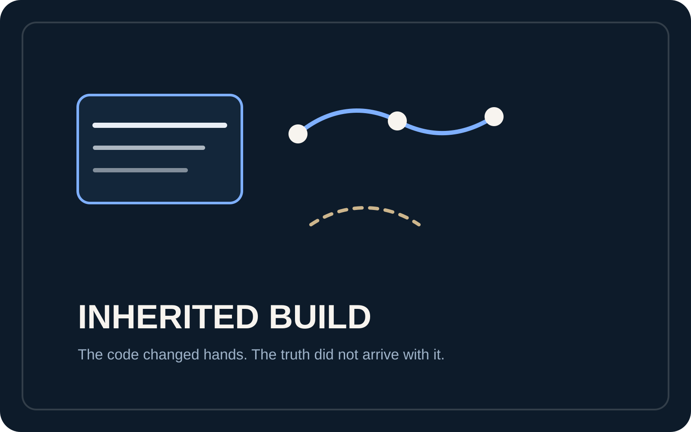
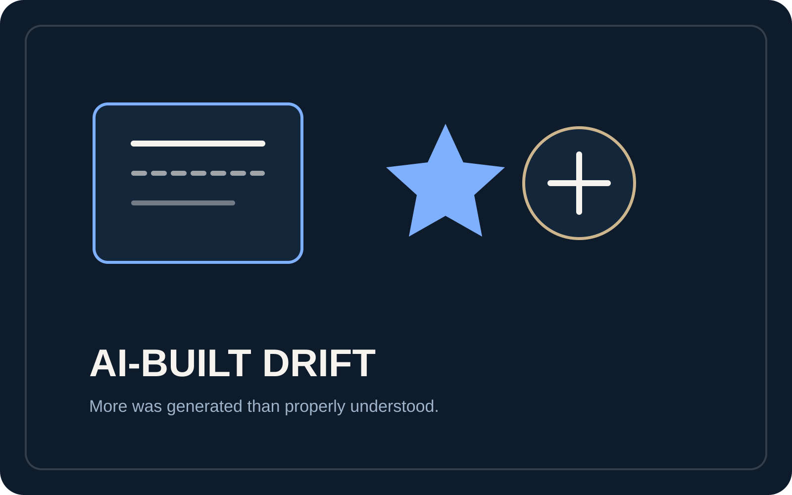
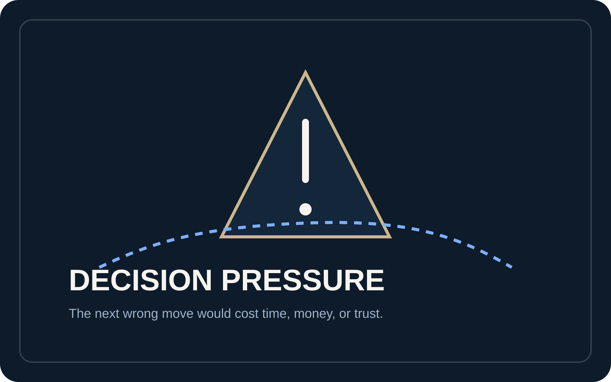
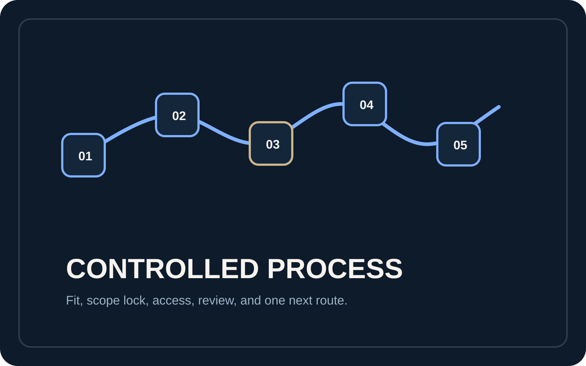
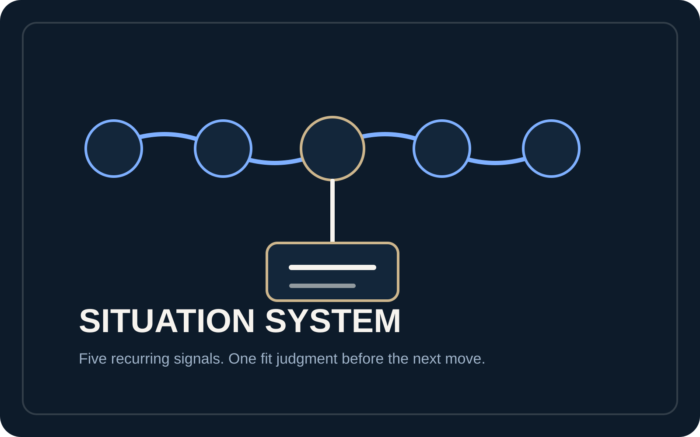
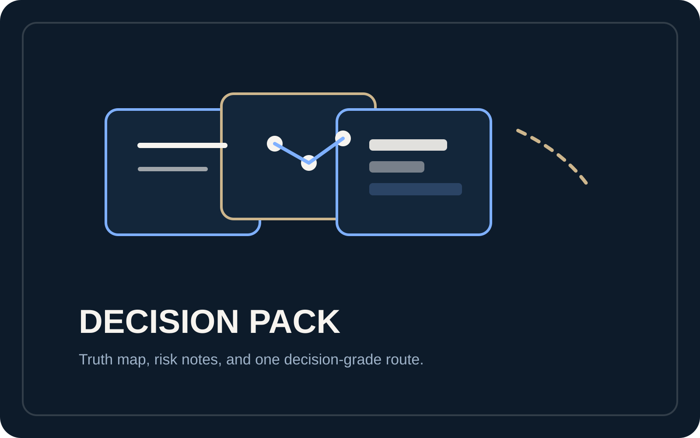
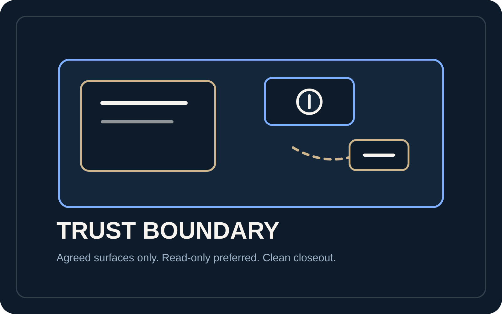

Truth Audit + Next Route Pack
When a live project becomes hard to trust.
When a founder or technical lead can no longer tell which surfaces are true, more activity compounds cost. Statepath reviews the agreed surfaces, separates confirmed truth from blocker risk, and returns one bounded next route before more spend, code, or confidence gets wasted.
One live project // one truth gap // one bounded next route
Situation patterns
If the current state cannot be read, more activity only makes it worse.
The full Situations page carries the fit system. The homepage only needs the three clearest signals that guessing is already too expensive.

Inherited build
The repo changed hands, but the truth did not.
Code, docs, and live behaviour no longer agree, so the next person is forced to guess.
See this situation
AI-built system drift
More was generated than properly understood.
Parts appear to work, but the operating picture is too fragile or unclear to trust for the next move.
See this situation
Decision pressure
The next wrong move would waste money, time, or trust.
You need to decide whether to fix, pause, narrow, replace, or re-route before committing more effort.
See this situationProcess preview
The route stays finite because the method is explicit before the work widens.
Home should show the method at a glance. The full Process page explains the complete sequence, evidence labels, and delivery boundary.
Scope lock -> review -> decision pack
The first step is designed to make the current state readable without drifting into an open-ended rescue before the baseline is even clear.
Agreed surfaces
Review only the named repo, docs, dashboards, or automations in scope.
Evidence labels
Separate direct truth, derived inference, and unresolved material before recommending a route.
Delivery boundary
Return one bounded next route, with optional follow-through quoted separately only if it is clearly justified.
Output anatomy preview
The pack feels credible because the structure is inspectable.
Home only needs the four modules a buyer can picture opening. The fuller public sample lives on Sample Output.
First-read summary
What was reviewed, what is true, what is unsafe to assume, and the recommended next move.
First page
Reviewed surfaces // confirmed truth // blocker risk // next route
Evidence ledger
The supporting surfaces, contradiction notes, and decision-weighted observations stay visible enough to inspect.
Ledger rows
repo
docs
live behaviour
decision note
Truth map
A clean split between what is confirmed, partial, blocked, and still cautionary.
Status split
confirmed
partial
blocked
caution
One bounded next route
The pack closes with one prioritised move, what waits, and why wider guesswork loses.
Route logic
Do next // hold wider rescue // explain why now
Choose the next page
Open the next page in the order you actually need it.
The homepage should orient you. The next page should answer the next real question.

See the sequence that keeps the audit finite and legible.
Scope lock, minimum access, evidence labels, delivery pack, and optional follow-through boundary.
Open Process
Whether the project and confusion point are a fit.
Inherited builds, AI drift, automation tangles, and other signals that the next step should be audited first.
Open Situations
See the shape of the answer before the work starts.
Truth map, risk notes, and one bounded next-route recommendation shown in a clean output structure.
Open Sample Output
Check the boundary, access model, and handling posture.
Minimum access, read-only preference, AI-use limits, and why the route stays inspectable.
Open Trust & AccessNeed the commercial boundary first? Open Offer. Ready to move? Open Start Here.